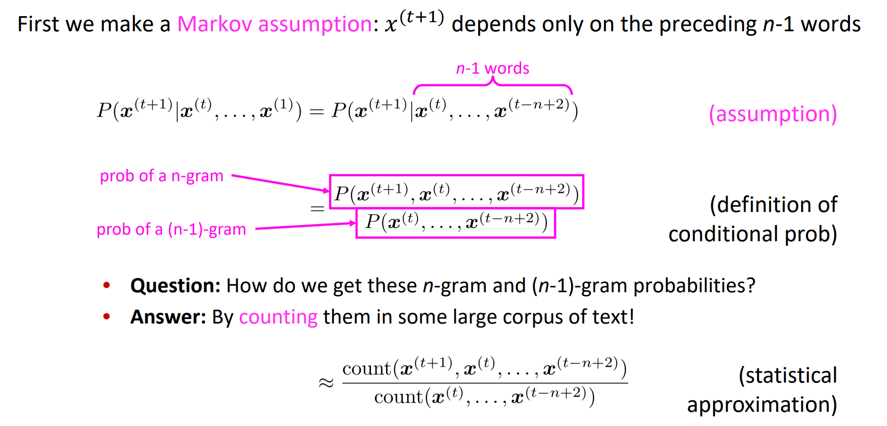
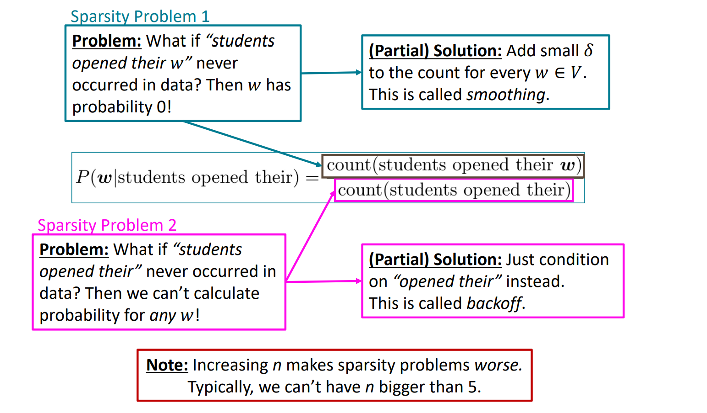
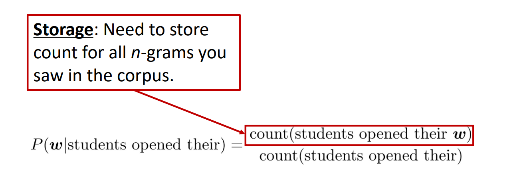
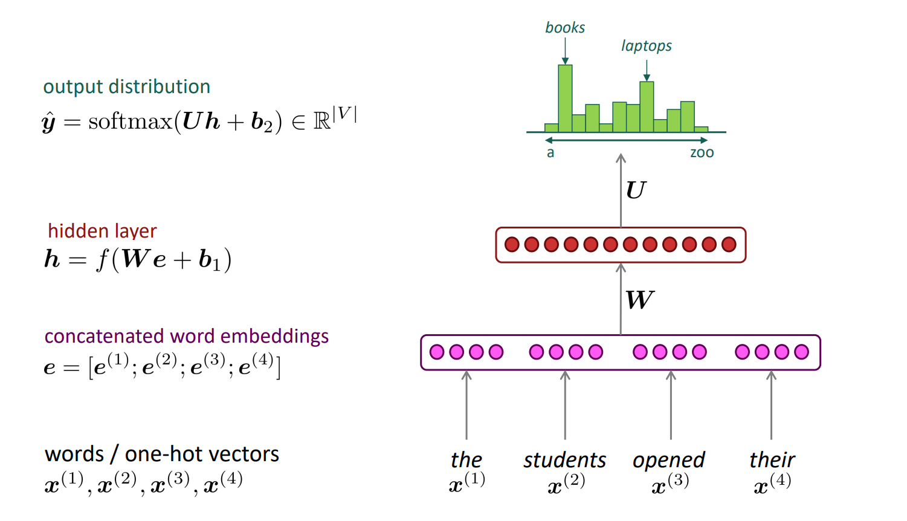

Language Models
1. Language Modeling
The probability of a sequence of \(\mathbb{m}\) words \({w_1, ..., w_m}\) is denoted as \(P(w_1, ..., w_m)\), \(P(w_1, ..., w_m)\) is usually conditioned on a window of \(\mathbb{n}\) previous words rather than all previous words: $$ P\left(w_{1}, \ldots, w_{m}\right)=\prod_{i=1}^{i=m} P\left(w_{i} \mid w_{1}, \ldots, w_{i-1}\right) \approx \prod_{i=1}^{i=m} P\left(w_{i} \mid w_{i-n}, \ldots, w_{i-1}\right) $$
2. n-gram Language Models
Idea: Collect statistics about how frequent different n-grams are and use these to predict next word.

2.1 Sparsity Problems

2.2 Storage Problems

3. A Fixed-window Neural LM

| Improvements over n-gram LM | Remaining Problems |
|---|---|
| No sparsity problem | Fixed window is too small |
| Don't need to store all observed n-grams | No symmetry in how the inputs are processed. |